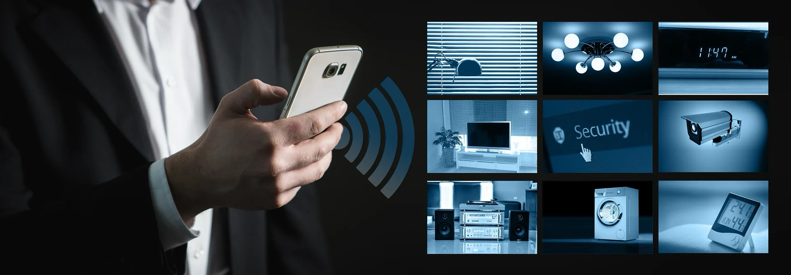

Interfaccia e controllo smart home
L’interfaccia è ciò che vedete ogni giorno: app sul telefono, pannelli a muro, comandi vocali o pulsanti fisici ancora presenti accanto ai moduli smart. La scelta non è solo estetica: determina chi può modificare uno scenario, dove servono alimentazioni dedicate o bus dati, e come si interviene in manutenzione senza perdere la configurazione.
Un impianto ben progettato separa le funzioni critiche (sicurezza, luci di emergenza) da quelle “confort”, evita di dipendere da un solo cloud e documenta password, account e backup lato dispositivo. Così l’interfaccia resta reattiva anche con rete instabile e, in caso di vendita dell’immobile, il passaggio di consegne è più semplice.
Dal punto di vista elettrico, ogni punto di comando smart richiede compatibilità con tensioni, sezioni di cavo e, dove serve, neutro in scatola: anticipare queste esigenze in cantiere costa meno che retrofit dopo le finiture.